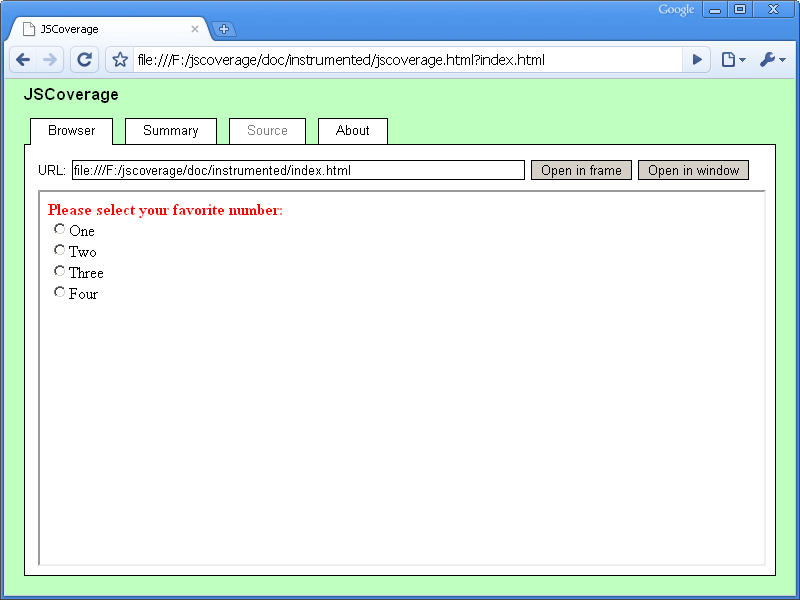
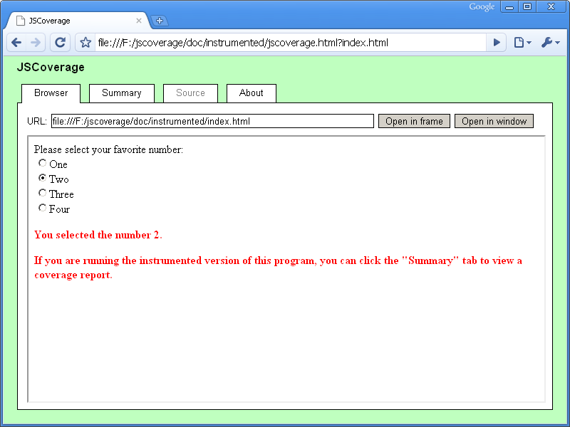
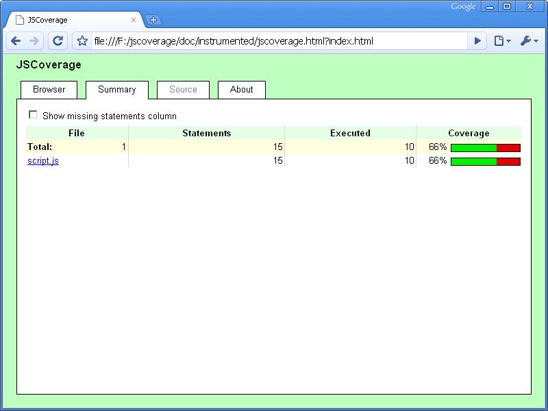
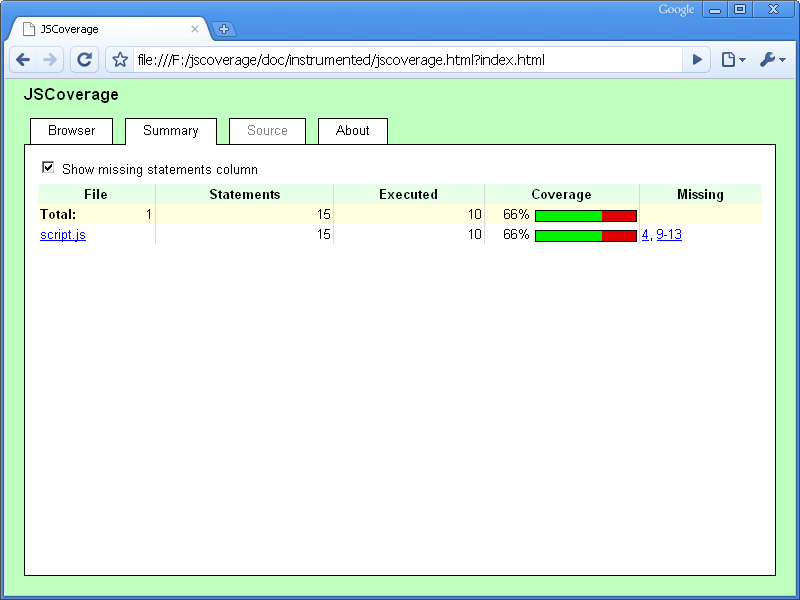
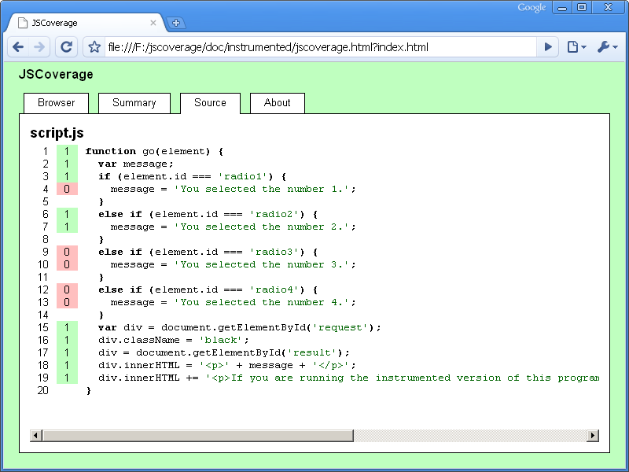

JSCoverage is a tool used to measure code coverage in JavaScript programs.
JSCoverage has two components:
You can compile JSCoverage on GNU/Linux or Microsoft Windows, using GCC. On Windows you will require Cygwin or MinGW/MSYS.
You can extract and compile the code with the following commands:
tar jxvf jscoverage-0.3.1.tar.bz2 cd jscoverage-0.3.1/ ./configure make
This will create the jscoverage executable (jscoverage.exe on Windows).
You can install the executable in /usr/local with the command:
make install
Alternatively, since the program consists of only the single self-contained
jscoverage executable, you may simply copy it to a suitable location
in your PATH.
Using JSCoverage requires three steps:
The first step is to add instrumentation to your JavaScript code. This is the function of the
jscoverage executable. You must provide two arguments:
jscoverage SOURCE-DIRECTORY DESTINATION-DIRECTORY
SOURCE-DIRECTORY is the directory containing the JavaScript code to be instrumented,
and DESTINATION-DIRECTORY is the name of the
directory to which jscoverage should output the instrumented code.
The jscoverage program will create DESTINATION-DIRECTORY if necessary and (recursively) copy
SOURCE-DIRECTORY to DESTINATION-DIRECTORY, instrumenting
any files ending with a .js extension.
For example, if you have a file
SOURCE-DIRECTORY/dir/index.html referencing the script
SOURCE-DIRECTORY/dir/script.js, then
jscoverage will create a copy of the HTML file at
DESTINATION-DIRECTORY/dir/index.html and an instrumented
version of the script at
DESTINATION-DIRECTORY/dir/script.js.
SOURCE-DIRECTORY/
dir/
index.html
script.js
|
→ |
DESTINATION-DIRECTORY/
dir/
index.html
script.js [instrumented]
jscoverage.html
|
In addition, jscoverage creates a file called jscoverage.html
which is used to execute the instrumented code.
Open jscoverage.html in your web browser.
The page contains a tabbed user interface:
The "Browser" tab contains an <iframe>, which is initially empty.
You can load a page into this frame by
entering its URL into the "URL" input field. For example, to load
the file DESTINATION-DIRECTORY/dir/index.html, you can
enter the relative URL dir/index.html into the input field.
You can load any page located in DESTINATION-DIRECTORY/
or a subdirectory underneath DESTINATION-DIRECTORY/; loading a page
from outside DESTINATION-DIRECTORY/, or from a foreign web
server, will give unexpected results.
Once the JavaScript code in the page in the "Browser" tab has been executed, click on the "Summary" tab. This will display the current code coverage statistics.
As long as you do not reload the
jscoverage.html page, the coverage report statistics are
cumulative. If you execute more JavaScript in the frame in the "Browser" tab (e.g., by clicking on a link to
another scripted page, or by reloading the frame containing a scripted
page) and switch to the "Summary" tab again,
the coverage report will combine the statistics from the previous report with any newly generated statistics.
Reloading jscoverage.html resets all code coverage statistics to zero.
The JSCoverage distribution comes with a trivial example program in the doc/example directory.
You can view the file doc/example/index.html in your web browser to run the (uninstrumented) program.
To instrument this program, follow these steps:
From the main distribution directory, execute the command:
jscoverage doc/example doc/instrumented
This will create the directory doc/instrumented and
place an instrumented copy of the code from doc/example in doc/instrumented.
You can load the file doc/instrumented/jscoverage.html in your web browser and type
the URL for the instrumented code in the "URL" input field. Since a relative URL is accepted, you
can simply type index.html to load the page.
Alternatively, you can append the URL to the query string of the
jscoverage.html URL; for example, if you are in the main JSCoverage
directory and the Firefox executable is in your PATH, you can load
the jscoverage.html frameset and the index.html page
all in one command line:
firefox "doc/instrumented/jscoverage.html?index.html"
For this particular page, the JavaScript does not execute automatically: you have to select one of the radio buttons to execute the code.
Once you have executed the JavaScript code, you are instructed to click on the "Summary" tab.
You can click the checkbox to show a list of statements missed during execution.
You can click one of the links to get a detailed view of a JavaScript source file.
In some situations it may be difficult to execute your code within the JSCoverage "Browser" tab. For example, the code may assume that it is running in the top-level browser window, generating errors if it is executed from within a frame. JSCoverage has an alternative mode of operation, called inverted mode, which may be useful in this case.
Normally you load jscoverage.html in your web browser, and in its
"Browser" tab you launch your test code. In inverted mode, you do the
opposite: you load your test page directly in your web browser, and from there
you launch JSCoverage. To do this you need to add some code to your test page:
window.open("path/to/jscoverage.html");
The "path/to/jscoverage.html" should be a URL pointing to the
location of the jscoverage.html file (remember, this will be in the
top level of the DESTINATION-DIRECTORY you specified when running
the jscoverage executable).
You can place this code wherever you like in your page: for example, you could attach it to a button:
<button onclick='window.open("path/to/jscoverage.html");'>Coverage report</button>
Note that you must use a window.open call; simply making a
link to jscoverage.html is not sufficient.
An example is located in the doc/example-inverted directory.
You can instrument the code and launch the index.html page:
jscoverage doc/example-inverted doc/instrumented-inverted firefox "doc/instrumented-inverted/index.html"
From this page, you select one of the radio buttons and then click the "Coverage report" button to launch the JSCoverage report.
The jscoverage program accepts the following options:
-h, --help
-V, --version
-v, --verbose
--exclude=PATH
jscoverage --exclude=PATH SOURCE-DIRECTORY DESTINATION-DIRECTORYcopies SOURCE-DIRECTORY to DESTINATION-DIRECTORY recursively, but does not copy SOURCE-DIRECTORY/PATH. PATH must be a complete path relative to SOURCE-DIRECTORY. PATH can be a file or a directory (in which case the directory and its entire contents are skipped). This option may be given multiple times.
--no-instrument=PATH
jscoverage --no-instrument=PATH SOURCE-DIRECTORY DESTINATION-DIRECTORYcopies SOURCE-DIRECTORY to DESTINATION-DIRECTORY recursively, but does not instrument any JavaScript code in SOURCE-DIRECTORY/PATH. PATH must be a complete path relative to SOURCE-DIRECTORY. PATH can be a (JavaScript) file or a directory (in which case any JavaScript files located anywhere underneath the directory are not instrumented). This option may be given multiple times.
When accessing jscoverage.html in a web browser, you may provide a
query string consisting of options separated by ampersand (&)
or semicolon (;). Any option not containing an equals sign
(=) is considered to be a URL which will be loaded in the "Browser"
tab.
u=URL, url=URL
m=BOOLEAN, missing=BOOLEAN
true, t, yes, y, on, 1
(to display the "Missing" column), or
false, f, no, n, off, 0
(to hide the "Missing" column). By default, the "Missing" column is not displayed.
.js files; it does not instrument code in <script>
elements in HTML files.
window.top, target="_top", etc.).